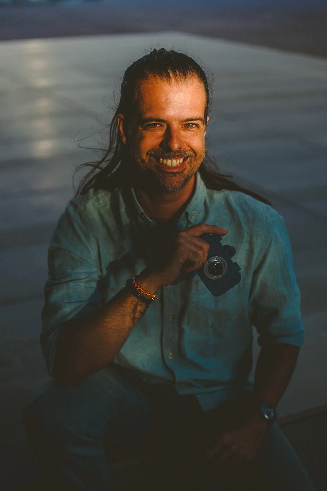

Selected Portfolios
A collection of light, shadow, and form.
The Process
Collaboration built on trust.
Creating an intimate portrait is a dialogue, not a monologue. My approach focuses on creating a safe, professional, and judgment-free environment where we can explore the human form together.
Based in my studio in Porto, I work with natural light and shadow to sculpt images that are timeless and artistic. Whether you are an experienced model or stepping in front of the lens for the first time, my goal is to make you feel empowered and seen.

Let's Create
Currently accepting commissions in Porto and Northern Portugal.